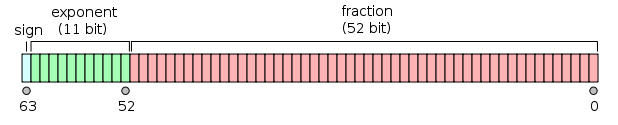

C Variables
Una variable no es más que el nombre de un área de almacenamiento que el programa puede manipular. En C, cada variable tiene un tipo específico; el tipo determina el tamaño y la disposición del almacenamiento de la variable. Los valores dentro de ese rango se pueden almacenar en la memoria y los operadores se pueden aplicar a la variable.
El nombre de una variable puede estar compuesto por letras, dígitos y el carácter de subrayado. Debe comenzar con una letra o un subrayado. Las letras mayúsculas y minúsculas son diferentes, porque C distingue entre mayúsculas y minúsculas. Basándose en los tipos básicos explicados en el capítulo anterior, existen los siguientes tipos básicos de variables:
| Tipo | Descripción |
|---|---|
| char | Normalmente es un byte (ocho bits). Es un tipo entero. |
| int | Entero, 4 bytes, rango de valores de -2147483648 a 2147483647. |
| float | Valor de coma flotante de precisión simple. La precisión simple tiene este formato: 1 bit de signo, 8 bits de exponente, 23 bits de mantisa.
|
| double | Valor de coma flotante de doble precisión. La doble precisión es: 1 bit de signo, 11 bits de exponente, 52 bits de mantisa.  |
| void | Representa la ausencia de tipo. |

El lenguaje C también permite definir variables de otros tipos, como enumeraciones, punteros, arreglos, estructuras, uniones, etc. Esto se explicará en capítulos posteriores; en este capítulo estudiaremos primero los tipos de variables básicos.
Definición de variables en C
La definición de una variable le indica al compilador dónde y cómo crear el almacenamiento de la variable. Una definición de variable especifica un tipo de datos y contiene una lista de una o más variables de ese tipo, como se muestra a continuación:
type variable_list;
typeIndica el tipo de datos de la variable; puede ser entero, coma flotante, carácter, puntero, etc., o también un objeto definido por el usuario.
variable_listPuede estar compuesto por el nombre de una o más variables; entre varias variables se utiliza una coma,para separarlas. Los nombres de las variables se componen de letras, dígitos y subrayado, y comienzan con una letra o un subrayado.
A continuación se enumeran algunas declaraciones válidas:
Definir una variable entera:
int age;
En el código anterior, `age` se define como una variable entera.
Definir una variable de coma flotante:
float salary;
En el código anterior, `salary` se define como una variable de coma flotante.
Definir una variable de tipo carácter:
char grade;
En el código anterior, `grade` se define como una variable de tipo carácter.
Definir una variable puntero:
int *ptr;
En el código anterior, `ptr` se define como una variable puntero a entero.
Definir varias variables:
int i, j, k;
int i, j, k;Se declaran y definen las variables`i`, `j` y `k`, lo que le indica al compilador que cree variables de tipoint`int` denominadasi、j、k`i`, `j` y `k`.
Inicialización de variables
En C, la inicialización de una variable consiste en asignarle un valor inicial al mismo tiempo que se define la variable. La inicialización de una variable puede realizarse en el momento de la definición o en el código posterior.
Un inicializador está compuesto por un signo igual seguido de una expresión constante, como se muestra a continuación:
type variable_name = value;
Donde:type`type` indica el tipo de datos de la variable,variable_name`variable_name` es el nombre de la variable,value`value` es el valor inicial de la variable.
A continuación se muestran algunos ejemplos:
int x = 10; // 整型变量 x 初始化为 10 float pi = 3.14; // 浮点型变量 pi 初始化为 3.14 char ch = 'A'; // 字符型变量 ch 初始化为字符 'A' int d = 3, f = 5; // 定义并初始化 d 和 f byte z = 22; // 定义并初始化 z // 声明外部变量 extern int d; extern int f;
Inicializar variables más adelante:
En el código posterior a la definición de la variable, se puede usar el operador de asignación=para asignar un nuevo valor a la variable.
type variable_name; // 变量定义 variable_name = new_value; // 变量初始化
Ejemplo:
int x; // 整型变量x定义 x = 20; // 变量x初始化为20 float pi; // 浮点型变量pi定义 pi = 3.14159; // 变量pi初始化为3.14159 char ch; // 字符型变量ch定义 ch = 'B'; // 变量ch初始化为字符'B'
Es importante tener en cuenta que las variables deben inicializarse antes de usarse. El valor de una variable no inicializada no está definido y puede contener cualquier valor basura. Por lo tanto, para evitar comportamientos indefinidos y errores, se recomienda inicializar las variables antes de usarlas.
Variables no inicializadas
En C, si una variable no se inicializa explícitamente, su valor predeterminado dependerá del tipo de la variable y del ámbito en el que se encuentre.
Para las variables globales y las variables estáticas (variables estáticas definidas dentro de una función y variables globales definidas fuera de una función), su valor inicial predeterminado es cero.
A continuación se muestran los valores predeterminados de variables de diferentes tipos cuando no se inicializan explícitamente:
- Variables enteras (`int`, `short`, `long`, etc.): el valor predeterminado es 0.
- Variables de coma flotante (`float`, `double`, etc.): el valor predeterminado es 0.0.
- Variables de tipo carácter (`char`): el valor predeterminado es `'\0'`, es decir, el carácter nulo.
- Variables puntero: el valor predeterminado es `NULL`, lo que indica que el puntero no apunta a ninguna dirección de memoria válida.
- Variables de tipos compuestos, como arreglos, estructuras y uniones: sus elementos o miembros se inicializan de forma predeterminada de acuerdo con las reglas correspondientes, lo que puede incluir la aplicación recursiva de las reglas predeterminadas a los elementos.
Es importante tener en cuenta que las variables locales (variables no estáticas definidas dentro de una función) no se inicializan automáticamente con un valor predeterminado; su valor inicial no está definido (contienen valores basura). Por lo tanto, antes de usar una variable local, se le debe asignar explícitamente un valor inicial.
En resumen, el valor predeterminado de las variables en C depende de su tipo y ámbito. El valor predeterminado de las variables globales y estáticas es `0`0, el valor predeterminado de las variables de tipo carácter es `'\0'`\0, el valor predeterminado de las variables puntero es `NULL`, mientras que las variables locales no tienen valor predeterminado; su valor inicial no está definido.
Declaración de variables en C
La declaración de una variable garantiza al compilador que la variable existe con el tipo y el nombre especificados, de modo que el compilador pueda continuar con la compilación sin necesidad de conocer todos los detalles de la variable. La declaración de una variable solo tiene significado en tiempo de compilación; en el enlace del programa se necesita la definición real de la variable.
Hay dos casos de declaración de variables:
- 1. Una es la que necesita crear espacio de almacenamiento. Por ejemplo:int aEl espacio de almacenamiento ya se crea en el momento de la declaración.
- 2. La otra es la que no necesita crear espacio de almacenamiento: se declara el nombre de la variable usando la palabra clave `extern` sin definirla. Por ejemplo:extern int aDonde la variablea`x` puede definirse en otro archivo.
A menos que se use laexternpalabra clave `extern`, todo lo demás son definiciones de variables.
extern int i; //声明，不是定义 int i; //声明，也是定义
Para obtener más información sobre `extern`, consulte:Palabra clave `extern` en C。
Ejemplo
Pruebe el siguiente ejemplo, en el que las variables se declaran al principio, pero la definición y la inicialización se realizan dentro de la función principal:
Ejemplo
Cuando el código anterior se compila y ejecuta, produce el siguiente resultado:
result 为: 3
Si necesita hacer referencia a una variable definida en otro archivo fuente, solo tiene que declarar la variable con la palabra clave `extern` en el archivo que la referencia.
Código del archivo addtwonum.c:
Código del archivo test.c:
Cuando el código anterior se compila y ejecuta, produce el siguiente resultado:
$ gcc addtwonum.c test.c -o main $ ./main result 为: 3
Lvalues y Rvalues en C
En C hay dos tipos de expresiones:
- Lvalue:Una expresión que apunta a una ubicación de memoria se denomina expresión lvalue. Un lvalue puede aparecer a la izquierda o a la derecha del signo de asignación.
- Rvalue:El término rvalue se refiere al valor numérico almacenado en alguna dirección de memoria. Un rvalue es una expresión a la que no se le puede asignar un valor; es decir, un rvalue puede aparecer a la derecha del signo de asignación, pero no a la izquierda.
Las variables son lvalues, por lo que pueden aparecer en el lado izquierdo del signo de asignación. Los literales numéricos son rvalues, por lo que no se les puede asignar un valor y no pueden aparecer en el lado izquierdo del signo de asignación. La siguiente es una sentencia válida:
int g = 20;
Pero la siguiente no es una sentencia válida y generará un error en tiempo de compilación:
10 = 20;Otras extensiones